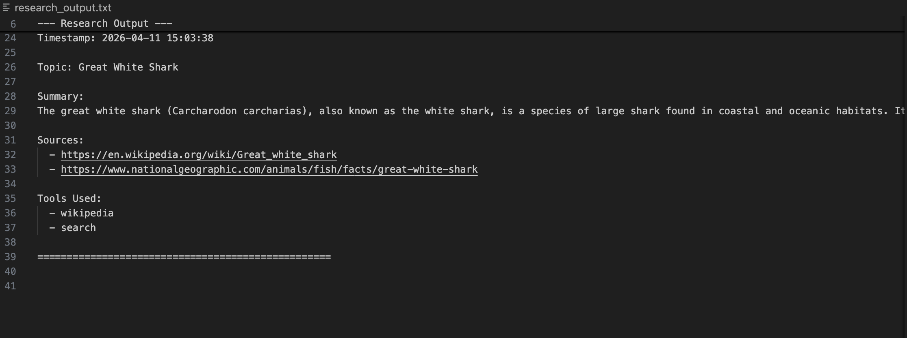

A command-line AI research assistant that searches the web, queries Wikipedia, and saves structured summaries to a text file.
A Python-based AI research assistant built with LangChain and OpenAI's GPT-4o-mini. Given a topic, the agent searches the web and Wikipedia, generates a structured research summary, and saves the output to a text file.
Searches the web for current information on the research topic.
Queries Wikipedia for encyclopedic background on the topic.
Saves structured research output to a timestamped text file.
Enforces a strict schema — topic, summary, sources, and tools used.
Below is an example of the structured text file the agent produces after researching a topic.

Output file showing topic, summary, sources, and tools used for a query on Great White Sharks